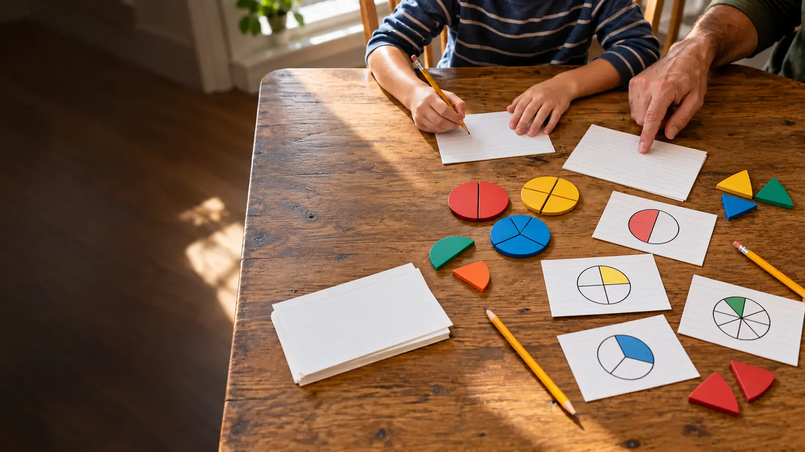

Original card
2 cups blue blocks
1/2 cup red blocks
1/4 cup yellow blocks
AT HOME · NO-SPEND MATH · EXPLORATION
No oven. No food. No “helpful” adult taking over. Scale three fictional lines on paper, prove the result two ways, and stop at 25 minutes.

Recipe scaling is useful math because every answer must preserve a relationship. But cooking introduces timing, chemistry, equipment and food safety that can hide the math. Remove all of that. Give the child three fictional ingredient lines, one multiplier and two ways to prove each result. At 25 minutes, stop.
The lab works best for school-age kids who can add repeated quantities or interpret common fractions with support. It costs nothing when you use scrap paper. Empty measuring cups or spoons are optional visual models, not required supplies. For another no-spend number activity, use the grocery receipt detective. For a build-and-test format, try the paper bridge lab. The 20-minute calendar reset applies similar chunking to family planning.
Do not buy fraction tiles, a scale or a measuring set. Draw circles or rectangles and divide them into equal parts. The learning comes from preserving ratios, not owning kitchen equipment.
Do not label an error careless. Ask the child to build the original card twice. The visual proof makes the rule visible without turning the adult into an answer machine.
Only after the core lab works, show a published equivalence. NIST’s Metric Kitchen lists 1 cup as 240 milliliters, 1/2 cup as 120 milliliters and 1/4 cup as 60 milliliters. That means the original fictional card can also be written as 480 mL, 120 mL and 60 mL; doubled, it becomes 960 mL, 240 mL and 120 mL.
Keep multiplication and conversion separate on paper. First scale all three lines. Then convert using the same official table. NIST notes that mass is often more accurate for culinary measurement and that liquid measures should be read on a level surface at eye level. Those are useful measurement principles, but this dry lab does not claim volume and mass are interchangeable or that a scaled cooking recipe will behave identically.
Doubling ingredient quantities does not prove that pan size, heating time, mixing order, food safety or final texture can also be doubled. A real recipe is a system, not just arithmetic. If the family later cooks, use a tested recipe, adult supervision, allergen controls, safe equipment and the recipe author’s scaling guidance. Keep children away from hot surfaces, sharp tools and appliances beyond their readiness and the manufacturer’s instructions.
NIST’s educational recipe materials connect measurement with proportional reasoning and emphasize isolating variables. That supports the structure of this lesson; it does not certify the fictional card as food. USDA educational cooking materials commonly place children within adult-led instruction. This page takes the safer preliminary step: reason first, cook nothing.
Read each line aloud and let the child point to a fraction piece. Use large-print cards and high contrast. A child can dictate while the adult writes, match identical units, or place two original cards side by side. If kitchen objects are distracting or carry food-related anxiety, use paper only. If fractions are new, solve the whole-number line and one half-line, then stop.
Low energy: double only 1/2 cup and prove it with two paper halves. No printer: handwrite the card. No English fluency: use numerals, unit symbols and drawn quantities while preserving the exact unit. Meltdown: circle one correct equality and end the session.
Triple a new three-line card using whole numbers and quarters. Halve a card only after the child can explain why every line must receive the same operation. Compare a volume measure with a scale as objects without claiming that a cup of every substance has the same mass. Do not stack all variations into one session; retrieval on another day is more useful than an exhausted worksheet marathon.
Check the multiplier, then each quantity, then each unit. Ask the child to show one result through repeated addition before correcting it. If the written answer and model disagree, treat the disagreement as the useful part of the lab. Do not introduce decimals, conversions or a second multiplier until all three original lines preserve the same relationship.
Simplify when fraction notation is unfamiliar, the child is hungry or frustrated, food topics are medically or emotionally difficult, or the adult is tempted to turn the activity into a real cooking project. Skip kitchen tools entirely when they create a safety or contamination concern. Use whole-number blocks and repeated addition instead.
Reviewed October 25, 2026 by Mr Adventure Dad Editorial Desk using NIST’s official cooking measurement equivalencies, measurement tips, and Metric Kitchen educational materials. The three-line card, timing and answer key are original editorial teaching tools. No recipe is tested or implied, and no affiliate links are attached. Report corrections through About.
MAKE THE WEEK COUNT
Build the plan your family can finish well, then leave enough energy for the next part of the day.
More family plans